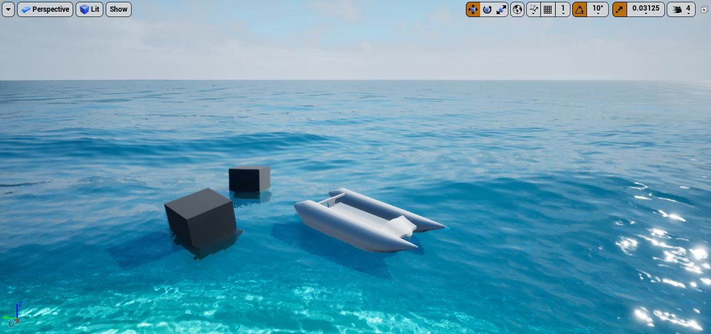
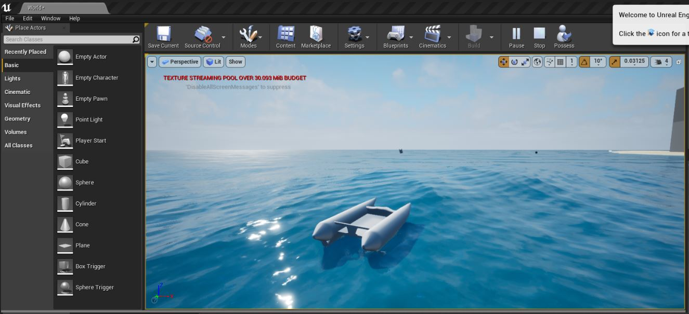
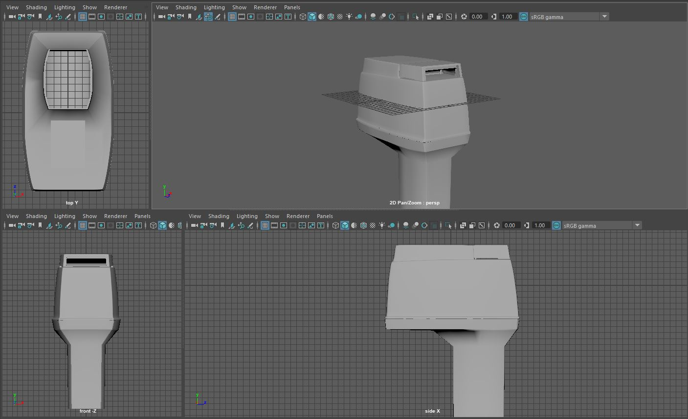
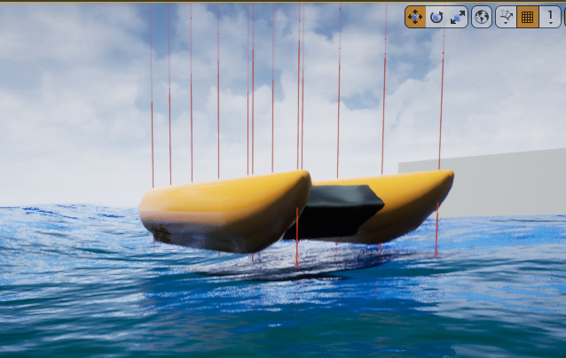

I am working towards dual Bachelors Degrees of Science in Computer Science and Computer Engineering.
I am currently studying programming with data structures and algorithms, mathematics, microprocessors, and internet computing.
Feel free to check out my LinkedIn profile and Resume
Contact: murphyk2017@fau.edu
While at the university I have spent time at the MPCR Lab and The Portal, where I started my VR (Virtual Reality) project.
With the project I plan to create a simulation for driving thundercats in the ocean using UE4 (Unreal Engine 4) and with assets such as the boat designed in Autodesk Maya 2019. UE4 has been used to make some well-known videogames such as Fortnite, and many VR titles.
I am trying to find a way to create the most realistic effect of buoyancy on the boat and the proper aerodynamics as it drives. See Racing for my inspiration.
| Software | Purpose |
|---|---|
| Unreal Engine 4 [UE4] | Simulating Physics + Wave Graphics |
| Autodesk MAYA | Sculpting 3d Models to use as Assets for UE4 |
| Paint.net | Editing materials to enhance the look of the sim |
  UE4 simulating thundercat on ocean (above)  Autodesk MAYA creating outboard engine to finish the boat  early version of sim testing buoyancy